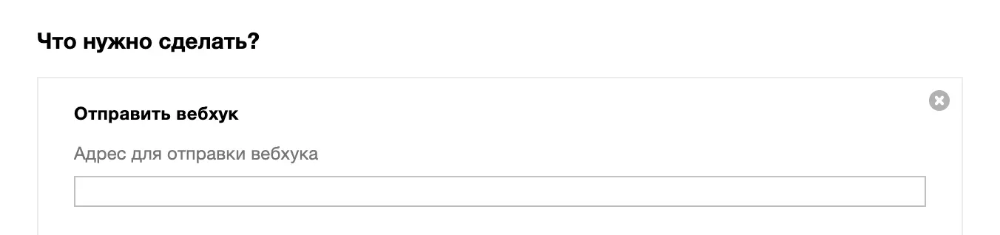

Вебхук — уведомление, которое отправляется во внешнюю систему: CRM, интернет-магазин, колл-центр. Выглядит вебхук как ссылка: http://mysite.ru/webhook?id={id}&type={type}. Когда внешняя система получает вебхук, она может на него как-то среагировать.
Например, из МоегоСклада во внешнюю CRM можно отправлять вебхуки с идентификатором и типом документа: http://mysite.ru/webhook?id={id}&type={type}.
Когда в документе в МоемСкладе что-то изменится, CRM получит уведомление типа: http://mysite.ru/webhook?id=1111-22dddw-2w3ed-222e30&type=CustomerOrder. Это буквально значит: Заказ покупателя с уникальным идентификатором 1111-22dddw-2w3ed-222e30 был изменен.
Далее можно создать скрипт, который будет запрашивать в МоемСкладе, что именно произошло с заказом, какой номер у заказа, какая сумма, а потом — отправлять покупателю СМС с текстом: Заказ покупателя 5643 от 10.02.2021 на сумму 5000 ₽ передан в службу доставки. Вебхук в этой цепочке служит стартовым механизмом оповещения. Все остальные шаги нужно программировать дополнительно.
Вебхуки в Сценариях
Отправка вебхуков используется как действие в Сценариях.

Адрес для отправки вебхука можно узнать в службе поддержки внешней системы. Например: http://mysite.ru/webhook
К этому адресу добавляются подстановки: http://mysite.ru/webhook?id={id}&type={type}
Внешняя система в случае срабатывания сценария получает уведомление типа: http://mysite.ru/webhook?id=1111-22dddw-2w3ed-222e30&type=CustomerOrder
Возможные подстановки для вебхуков: {id} — идентификатор, {type} — тип документа.
Возможные значения для {type}:
CustomerOrder(Заказ покупателя);InvoiceOut(Счет покупателю);InvoiceIn(Счет поставщика);PurchaseOrder(Заказ поставщику);Demand(Отгрузка);Supply(Приемка);ProductionTask(Производственное задание);PaymentIn(Входящий платеж);PaymentOut(Исходящий платеж);CashIn(Проходный ордер);CashOut(Расходный ордер);SalesReturn(Возврат покупателя);Move(Перемещение);PurchaseReturn(Возврат поставщику);Company(Контрагент).